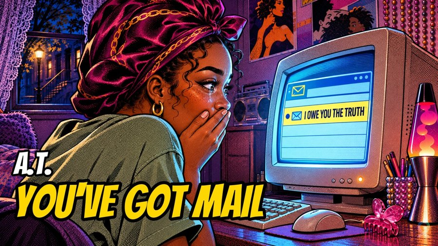

Track 08 · My Turn
You've Got Mail
Home in Brooklyn after the shopping trips, dinner with Mama and Daddy in the brownstone she paid off, and then her old computer says it: you've got mail. Years of silence end in one subject line, "I owe you the truth." The night of her talent show he was chased through Newark by five guys looking for his older brother, over a fence and onto the tracks, and the threat they yelled is why he lied about a full ride and walked away. The scholarship was partial. He joined the Army, trained at Fort Benning, stood in the back of her biggest night, an
 Watch the official video
Watch the official video
Lyrics
[Intro]
Welcome! You've got mail!
[Spoken]
Hm... who still got this address?
[Verse 1]
Pulled up to the brownstone, bags from 'round the world
Daddy on the stoop like "there go my baby girl"
Same house I paid off, the deed up in the drawer
Mama at the stove, she ain't gotta work no more
Dinner at the table, Daddy sayin' grace
Mama passin' cornbread, starin' at my face
"You eatin' out there?" "Yes, Ma." "You sleepin'?" "Sometimes"
Faked a little yawn, kissed 'em both goodnight
Down the hall, first floor, my old room by the stoop
Same window I climbed out when that party line was mine
Wrapped my hair, lights low, hummin' to myself
Old posters on the wall, a trophy on the shelf
That old gray tower hummin' in the corner of the room
Daddy never signs it off, he be checkin' Knicks scores too
Screen came alive, that little man was runnin'
And a voice from the past said somethin' I ain't see comin'
[Hook]
You've got mail, and my heart just dropped
Your screen name sittin' right there at the top
Years of silence in a subject line
"I owe you the truth," and I'm losin' my mind
You've got mail (you've got mail)
After all this time... you've got mail
[Verse 2]
"Dear A, I know it's late, I know I'm years too slow
But you deserve the truth about the night of your show
Practice let out early, letter in my hand
Walkin' down Broad Street, already makin' plans
Roses from the bodega, red ones, wrapped in plastic
Then a black car creepin' slow, cuttin' through the traffic
Window cracked an inch and somebody said 'that's him'
'That's Bishop's little brother,' and the whole street went dim
Four doors swung open, five dudes hopped out
I ain't think, I just ran, I ain't even get to shout
Dropped the roses on the corner, cut through Military Park
Down Market, past Penn Station, streetlights, gettin' dark
Under the train bridge, footsteps right behind me
Ironbound alley, dead end, they 'bout to find me
Chain link fence, A, I never climbed that fast
Sliced my palm on the wire, jumped and hit the tracks
Heard 'em at the fence, one of 'em out of breath
Yellin' through the links while I'm runnin' for my life:
'My little sister know his girl, she stay in Bed-Stuy!'
'Watch your back! We gon' catch you when you with your girl!'
Right then I knew I couldn't bring my storm to your world
So I showed up late with a lie about the bus
Said 'full ride, baby,' and I walked away from us"
[Hook]
You've got mail, and my heart just dropped
Your screen name sittin' right there at the top
Years of silence in a subject line
"I owe you the truth," and I'm losin' my mind
You've got mail (you've got mail)
After all this time... you've got mail
[Verse 3]
"Truth is, A, it never was a full ride
It was partial, half a scholarship, I had too much pride
Coral Gables, other half of the bill comin' due
One semester, empty pockets, couldn't make it through
Couldn't come back east, they was still out lookin'
Couldn't lead 'em to your door, couldn't lead 'em into Brooklyn
So I raised my right hand, signed up for the Army
Fort Benning, Georgia, red clay, drill sergeant on me
Got leave the week of your big night downtown
Stood in the back in my fitted, didn't make a sound
You hit that last note and the whole place stood
You looked at me and smiled, then looked away, I understood
So I let you have your night, caught the Greyhound south
Back to Benning, then they shipped us out
Now I'm typin' from a tent on a FOB in Iraq
Thirty minutes on the clock, soldiers lined up out the back
I ain't askin' you for nothin', I just needed you to know
I ain't leave 'cause I stopped lovin' you, I left so you'd be safe at home
P.S. your picture still inside my helmet
Signed, number twenty three... wish I could've told you in person"
[Bridge]
Cursor blinkin' slow, I can't find the words
All these years I blamed you, you was savin' me from hurt
I been buyin' everything to fill this hole
Now a letter on a screen got the key to my soul
[Final Hook]
You've got mail, and I'm writin' back
Every word I couldn't say, every year we lost track
Fingers shakin' on these old gray keys
Come home safe to me... come home to me
I'm writin' back (I'm writin' back)
After all this time... I'm writin' back
[Outro]
"Dear Twenty Three...
Come home safe.
I'll leave the window open."
Send.
Written by Grey Beard and A.T. ℗ & © 2026 Threadia AI, Inc. All rights reserved.